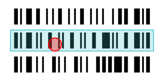
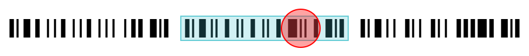
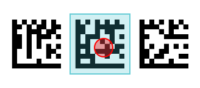
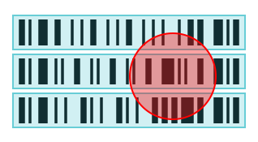
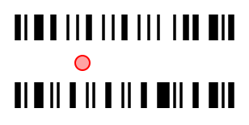

Set up the Active Scan Area and Location Selection#
When capturing barcodes, you want to control where exactly barcodes are scanned. For example, you may want to scan codes only at one location to let users pick a barcode by precisely pointing at it. Or part of the camera preview is covered by UI elements and you want to ensure that no codes are scanned below these elements.
This page describes how to setup the scan area for barcode capture to get the optimal behavior for your app.
Setting up the Scan Area for Your Use Case#
The Scan Area is Restricted to the Visible Part of the Preview#
When displaying the processed frames in the DataCaptureView, the scan area is automatically restricted to what is visible. This avoids unexpected scans as the code first has to be visible on screen before it can be scanned. This is especially important when the preview only shows a small part of the whole camera frame, e.g. when using a cropped view.
If you want to scan codes in the whole visible area, no further configuration is required. If you want to further restrict the scanning area, e.g. to leave a region around the border of the preview, you can change the DataCaptureView.scanAreaMargins property on the DataCaptureView. Here is an example of restricting the scanning area further by 50 device independent pixel from all sides.
const view = ...;
view.scanAreaMargins = new Scandit.MarginsWithUnit(
new Scandit.NumberWithUnit(50f, Scandit.MeasureUnit.DIP),
new Scandit.NumberWithUnit(50f, Scandit.MeasureUnit.DIP),
new Scandit.NumberWithUnit(50f, Scandit.MeasureUnit.DIP),
new Scandit.NumberWithUnit(50f, Scandit.MeasureUnit.DIP)
);
If you want to adjust margins based on the view dimensions or orientation, e.g. to use different margins based on the device orientation, you can observe view size and orientation changes on the data capture view by registering a DataCaptureViewListener on the data capture view.
Changing the Point of Interest#
By default, scanning is optimized for the center of the visible part of the preview (or the center of the frame if the frame is not displayed in a DataCaptureView). This is specified through what we call the point of interest. This point is also where code selection happens if it is enabled, more on that in the next section.
If you want to shift the scanning to another point, you can change the DataCaptureView.pointOfInterest property. For example, the code below shifts the point of interest vertically to a fourth of the height:
const view = ...;
view.pointOfInterest = new Scandit.PointWithUnit(
new Scandit.NumberWithUnit(0.5, Scandit.MeasureUnit.Fraction),
new Scandit.NumberWithUnit(0.25, Scandit.MeasureUnit.Fraction)
);
When specifying fractions, they are relative to the visible area minus the margins. This means that a point of interest of 0.5/0.5 is always centered in the scan area defined through the size of the view and potentially added margins.
As indicated above, register a DataCaptureViewListener on the data capture view to change the point of interest whenever the view dimension or orientation changes.
Location Selection#
Note
Location selection is only available for BarcodeCapture.
Sometimes it’s necessary to let the user select which code to scan, e.g. to select one code from a dense stack of barcodes. Enabling full-image scanning is not desired in that case as any of the codes currently visible on screen could be returned as part of the results. To not return a random code but clearly target specific codes, a LocationSelection can be set in the BarcodeCaptureSettings. Location selections implement a specific strategy to select barcodes by their location.
Radius Location Selection#
The RadiusLocationSelection is the simplest and for barcode scanning the preferred way of location selection. It lets you define a radius around the point of interest (see previous section). Any barcode touched by the circle will be recognized and returned, any barcode not touched by the circle will be entirely ignored. Radius location selection can resolve all of the following scenarios that could not be handled properly with full-image scanning:
Selecting stacked codes, e.g. a sheet of vertically-stacked Code 128. Here the middle code will be returned as it is touched by the circle while the code above and below are not.

Selecting codes printed next to each other. Once again only the middle code is returned as it is the only one touched by the circle.

Both of those scenarios work with any symbology, here an example of Data Matrix codes printed next to each other.

As the code selection is done through a circle it works just as well for vertical codes, or codes at any other angle.

A RadiusLocationSelection is created by specifying a radius and then setting it on the barcode capture settings with BarcodeCaptureSettings.locationSelection. For example, the code below creates a radius location selection for a radius of 0 (a valid radius forcing barcodes to contain the point of interest):
const barcodeCaptureSettings = ...;
barcodeCaptureSettings.locationSelection = new Scandit.RadiusLocationSelection(
new Scandit.NumberWithUnit(0, Scandit.MeasureUnit.Fraction)
);
When choosing the radius it is important to consider two potential issues:
If the radius chosen is too large, it might often be touching multiple barcodes at the same time. In this case it is not a given that the central barcode will be returned and it is advicable to reduce the radius.

If the radius chosen is too small, higher precision is needed to touch a barcode. It can be helpful to the user experience to increase the radius in this case.

Todo
Reference a guide about code selection UIs
Rectangular Location Selection#
The RectangularLocationSelection lets you define the size of a rectangle around the point of interest (see previous section). Any code outside of the rectangle will not be recognized. The main use case for the rectangular location selection is to provide a code selection that matches the UI of the LaserlineViewfinder.
A RectangularLocationSelection is created by specifying the size of the rectangle and then setting it on the barcode capture settings with BarcodeCaptureSettings.locationSelection. For example, the code below creates a rectangular location selection for a very thin laserline taking 10% of the view’s height and 90% of the view’s width:
const barcodeCaptureSettings = ...;
const size = new Scandit.SizeWithUnit(
new Scandit.NumberWithUnit(0.9, Scandit.MeasureUnit.Fraction),
new Scandit.NumberWithUnit(0.1, Scandit.MeasureUnit.Fraction)
)
barcodeCaptureSettings.locationSelection = Scandit.RectangularLocationSelection.withSize(size);
The size of the rectangle can also be set by only providing either the width or the height and then an aspect ratio to calculate the other dimension. This can be especially useful for defining a square area:
const barcodeCaptureSettings = ...;
const width = new Scandit.NumberWithUnit(0.5, Scandit.MeasureUnit.Fraction);
barcodeCaptureSettings.locationSelection = Scandit.RectangularLocationSelection.withWidthAndAspectRatio(width, 1);
Debugging The Scan Area And Location Selection#
It can be important to visually debug the scan area to make sure that it is configured exactly how it should be. To this purpose you can enable an overlay that visualizes everything that was set in the scan area through BarcodeCaptureOverlay.shouldShowScanAreaGuides:
let overlay = ...;
overlay.shouldShowScanAreaGuides = true;
Visualized are:
The scan area including the margins by a light grey rectangle
The radius location selection by a green crosshair
The above visualization is for the following example settings:
let barcodeCaptureSettings = ...;
barcodeCaptureSettings.locationSelection = new Scandit.RadiusLocationSelection(
new Scandit.NumberWithUnit(5, Scandit.MeasureUnit.DIP));
let dataCaptureView = ...;
dataCaptureView.pointOfInterest = new Scandit.PointWithUnit(
new Scandit.NumberWithUnit(0.7, Scandit.MeasureUnit.Fraction),
new Scandit.NumberWithUnit(0.25, Scandit.MeasureUnit.Fraction)
);
dataCaptureView.scanAreaMargins = new Scandit.MarginsWithUnit(
new Scandit.NumberWithUnit(40.0, Scandit.MeasureUnit.DIP),
new Scandit.NumberWithUnit(0.0, Scandit.MeasureUnit.DIP),
new Scandit.NumberWithUnit(40.0, Scandit.MeasureUnit.DIP),
new Scandit.NumberWithUnit(0.5, Scandit.MeasureUnit.fraction)
);